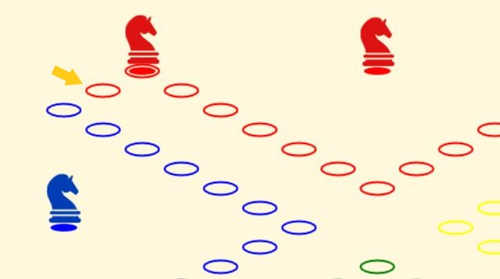

Cool, tu viens pour jouer ?
Le duo red/yellow l'emporte !
Cool, tu viens pour jouer ?
Le duo red/yellow l'emporte !
Le jeu de toc, ou jeu de tock, est un jeu de société proche du jeu des petits chevaux. Il se joue à deux équipes de deux joueurs, qui devront collaborer pour sauver l'ensemble de leurs pions et ainsi remporter le partie.
Ici, pas de lancers de dés hasardeux ni prière silencieuse pour obtenir le bon chiffre ! Tout se joue aux cartes, de la sortie des pions à leur sauvetage en passant par leur déplacement.
Un jeu complet de 52 cartes sera utilisé durant la partie, distribué au fur et à mesure des rounds. Eheh, je vous entends d'ici Comment ça un round ? Il est vrai que ça peut prêter à confusion. Appelons plutôt ça une manche ! Chaque manche suit le même déroulé :
On troque !
Chaque joueur donne une carte à son coéquipier, sans connaître sa main. Observe bien le plateau pour lui offrir la carte parfaite ! Et si tu ne l'as pas... Tu peux toujours jeter la moins utile en t'excusant.
On joue !
Tour à tour chaque joueur peut jouer une carte sur l'un de ses pions, ou en défausser une. Les joueurs usent/jettent ainsi toutes leurs cartes, mettant fin à la manche lorsque toutes les mains sont vides, une nouvelle commence alors.
Le nombre de cartes distribuées au début d'une manche varie au cours du jeu. D'abord tu auras 5 cartes, puis 4, puis de nouveau 4, et on reprend du début. Et si tu calcules bien... Bingo, bravo champion ! 5x4 + 2(4x4) = 52 ! Autrement dit, le paquet entier défile en trois manches, puis est remélangé. Tu peux donc t'amuser à compter les cartes pour mieux anticiper (on est pas un casino, on râlera pas promis)
Les manches s'enchaînent ainsi jusqu'à ce qu'une équipe ait sauvé tous ses pions.
Bonne question, ça ! Je t'ai dit qu'il fallait sauver tes pions, mais pas comment on les sauvait. Regarde donc cette image :
Le pion rouge sur une case rouge est un pion sorti, qui est d'ailleurs positionné sur sa case de sortie, il peut donc avancer sur le plateau. Pour être sauvé il doit tout d'abord atteindre son écurie (case rouge pointée par la flèche orange). Chaque équipe a sa propre écurie, situé juste derrière la case de sortie de même couleur. Une fois sur cette case, son propriétaire devra jouer un as ou un roi pour le sauver définitivement
Les règles de déplacement ne suivent pas exactement celles des petits chevaux traditionnels
J'y viens j'y viens, patience petit scarabé. Voici les contrôles selon le contexte !
Sur une carte : sélectionner la carte à donner (en phase d'échange) ou à jouer (en phase de jeu)
Sur un pion, avant d'avoir joué une carte : changer le pion que la carte affectera
Sur un pion, après avoir joué un valet: échanger la place du pion avec le pion courant
Sur un pion, après avoir joué un 5 ou un 7: déplacer le pion
Sur une carte, en phase de jeu : défausser la carte
Le clic droit est utilisé pour jouer, aussi si un curieux veut ouvrir l'inspecteur, il faudra utiliser le raccourci du navigateur. Désolé !
Gneuhgneuhgneuh il a l'air super chiant ton jeu, en gros on joue juste des cartes au lieu des dés
Eh bien non, jeune impertinent ! Toutes les cartes ne se valent pas, et certaines donnent lieu à des effets particuliers.
As : Tortue polyvalente
L'as permet à un pion de sortir de sa maison, ou d'être sauvé s'il est placé sur son écurie. Sinon, il peut aussi te permettre d'avancer d'une case, tout bêtement
Roi : Sauver, sortir ou courir
Le roi permet à un pion de sortir de sa maison, ou d'être sauvé s'il est placé sur son écurie. Sinon, il peut aussi te permettre d'avancer de treize cases, beau sprint !
Reine : Courir
La reine permet à un pion d'avancer de 12 cases, plus d'un quart du plateau en une carte !
Valet : Joueur de Portal
Le valet permet à un pion d'échanger de place avec n'importe quel autre
10 : le Recycleur
Le 10 force le joueur suivant à se défausser d'une carte au lieu d'en jouer une. Et vice supplémentaire, son effet s'applique également quand le 10 est défaussé : plus besoin de jouer pour faire chier !
7 : le Généreux gourmand
Le 7 peut être décomposé entre tous vos pions, tu peux par exemple déplacer un premier de 2, un deuxième de 1 et un troisième de 4. En plus de cela, les pions ainsi déplacés mangeront tout sur leur passage. Attention, la fragmentation se fait case par case sans ctrl-z possible (non ce n'est pas une flemme de code, mais une règle officielle !)
5 : Santa Claus
Le 5 peut être joué sur n'importe quel pion, allié ou adverse. Un bon moyen d'aider ton allié, ou de forcer un adversaire à refaire un tour de plateau !
4 : Rollback buggé MAIS sécurisé
Le 4 permet de revenir en arrière, en faisant reculer un de tes pions de 4 cases ni plus ni moins. Mais joue pas au plus fin, tu ne peux pas arriver à reculer dans ou derrière ton écurie è_é